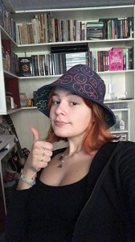

Vitória Trevisan Menezes é uma desenhista, estudante e costureira gaúcha, em sua obra foca em uma variedade de mídias, no entanto ultimamente vem dedicando a maior parte do seu trabalho a moda. A evolução de sua arte é detalhada na linha do tempo a seguir.
2004 - 2017 | Nascimento e infância
Nasceu em 11 de Maio de 2004 em Santa ngelo no Rio Grande do Sul, nasceu prematura e teve de passar uma semana em uma incubadora antes de sair do hospital. após a saída do hospital ainda permaneceu 6 meses na cidade, após isso sua família retornou a cidade que moravam anteriormente, Nova Prata, aos 5 anos de idade se mudou a Porto Alegre. No mesmo ano entrou no ensino fundamental na escola Marista São Pedro, nesse período começou a desenvolver interesse em desenho com o apoio da família e de professores. No 4° ano trocou para o colégio Santa Inês, lá começou a estudar teatro.
Em meio a 2016 se mudou para Frederico Westphalen, lá passou um ano e meio de sua vida, tendo considerado o pior lugar que já morou, onde sofreu bullying devido a sua origem na capital. No período em que esteve na cidade fez um curso de costura, algo que aumentou seu interesse na área.

2018 - Presente | Novos Planos
Em 2018 mudou de estado e foi a Santa Catarina, mais especificamente para Imbituba, lá estudou por um ano na escola Porto Seguro, nesse período continuou dedicando-se a desenhar.
Em 2019 entrou para o Instituto Federal de Santa Catarina (IFSC), local onde pode entrar em contato com diversas pessoas que como ela eram interessadas em campos artísticos, nesse mesmo período avaliou suas escolhas para a vida e decidiu-se que desejava trabalhar com arte no futuro. Nó final do próximo ano ganhou uma máquina de costura, algo que imediatamente lhe trouxe entusiasmo a moda, que a motivou a desenvolver seriamente suas habilidades de costura e lhe concedeu a ambição de cursar moda em seu ensino superior.
Em 2021 seu desenvolvimento artístico diminuiu devido à redução de seu tempo livre, no entanto sempre que possível aproveita seu tempo para aperfeiçoar sua costura e habilidades de desenho. Em sua arte atual foca principalmente na figura feminina, muitas vezes tratando temas mitológicos ou mórbidos, em relação a costura produz peças que podem ser utilizadas no dia a dia ou modifica as que já tem.
Obra destaque | Costura
A obra foi escolhida por representar a mais recente ambição de vida de Vitória, a moda, mais especificamente obter uma graduação em moda, nesse caso costurou um chapéu, a peça exibida abaixo foi costurada por Vitória em junho de 2021, segundo a artista uma das suas produções favoritas. O chapéu foi uma evolução de outros feitos antes dele, tendo pesquisado e experimentado com vários moldes até chegar a versão final, com esse processo terminado escolheu enfeitá-lo com rostos sorridentes e flores na porção do interior.
Referências
- Entrevista com a artista